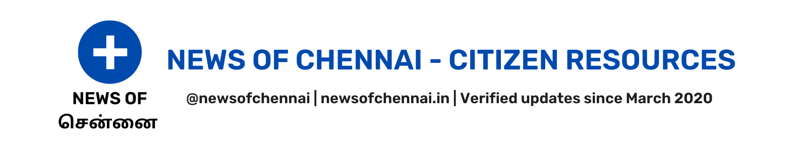

Switch to English Version
சென்னை ஏரியின் நிலை
ஏரியைத் தேர்வுசெய்க:
செம்பரம்பாக்கம்
சோளவரம்
கண்ணாங்கோட்டை தெர்வாய் கண்டிகை
பூண்டி
புழல்
வீராணம்
சேமிப்பு நிலை (100%)
தற்காலிக நிலை:
9.13
%
ஏரியின் நிலை -
தேதியன்று